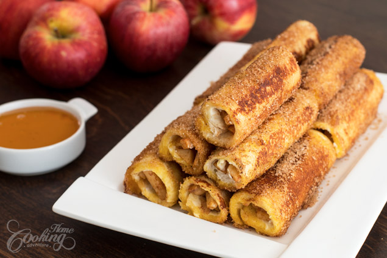

Apple French Toast Roll-Ups

I really love finding new ideas for breakfast time like these Apple French Toast Roll-Ups, that are simply wonderful for apple season.
Slices of bread, filled with delicious cream cheese and apple cinnamon mixture are rolled and dipped in egg and milk mixture and then cooked until golden brown. And that is not all, once cooked, they are rolled in a cinnamon sugar mixture for extra flavor and texture. It is such an incredible way of having apple for breakfast, and kids really love it.
French Toast Roll-Ups can be made with various fillings, so just let your imagination find the perfect filling for your breakfast or snack. You can also consider making savory rolls like using cheese, ham or bacon or even veggies as filling. I am telling you, the options are endless.
Hope you will give this delicious treat a try and don’t forget to let me know if you enjoyed them.
Prep time=20 mins || Cook time=10 mins || Total time=30 mins
Ingredients
Makes 10-12 roll-ups
2 medium apples, peeled, cored and cut in small pieces
1/2 tsp (1.5g) cinnamon
2 tsp (10ml) lemon juice
2 eggs
3 tbsp (45ml) milk
10-12 toast bread slices
4 oz (120g) cream cheese, room temperature
1/3 cup (67g) sugar
1 tsp (3g) ground cinnamon
2 tbsp (28g) butter, for cooking
Directions
Place apple pieces, cinnamon and lemon juice in a small saucepan. Cook over low-heat for about 3 minutes, until apples start to soften. Transfer apples into a bowl and set aside to cool until ready to use. In a bowl combine sugar with cinnamon and set aside. In another bowl beat eggs with milk and set aside. Remove crust from each slice of bread and flatten using a rolling pin. Spread cream cheese evenly on each slice of bread. Add about 1-2 tsp of apples and roll up each slice. Heat a non-stick pan over medium heat and melt about 1 tbsp of butter. Dip each roll in egg mixture and cook on each side until golden brown. Cook 3-4 roll at a time. Clean the pan slightly with a paper towel and repeat until all rolls are cooked. Roll into the sugar cinnamon mixture. Serve warm and dip in maple syrup if desired.
Nutrition facts
1 Roll-Up ( 66g) - Calories:115, Fat: 6.3g, Saturated Fat:3.6g, Unsaturated Fat:0.0g, Carbohydrates:12.9g, Sugar:7.9g, Fiber:1.1g, Protein:2.4g, Cholesterol:43mg, Calories from Fat 57, Sodium 105mg, Potassium 66mg, Vitamin A 4%, Vitamin C 4%, Calcium 3%, Iron 4%, Nutrition Grade B-, daily percent values are based on a 2000 calorie diet